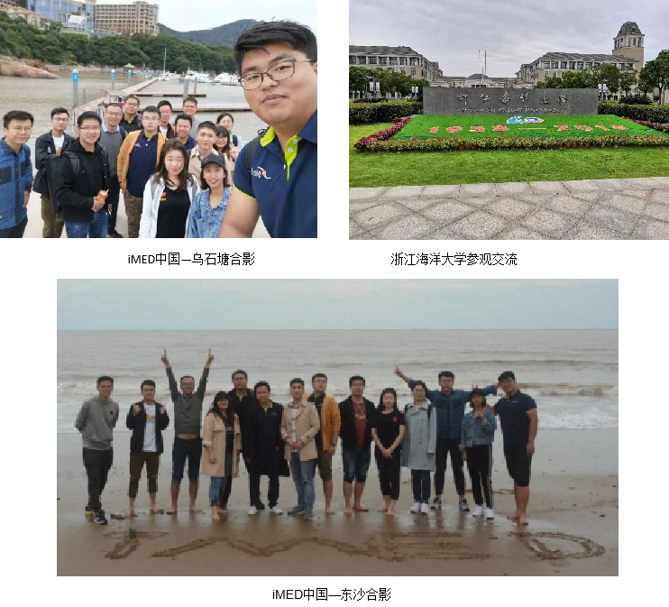

——iMED中国团建纪实
近期，iMED中国团队相继迎来了上级领导部门和多家合作医院的参观考察，如慈溪市副市长周阳一行、湘潭医院医生考察团等。大家积极筹备相关事宜，使得领导、嘉宾们乘兴而来，尽兴而归。同时多位老师、同学正在积极准备ISBI、CVPR等多项业内顶会、顶刊的论文投稿工作。尽管工作密度大、工作强度高，但我们依然乐此不疲，有序推进工作。为缓解工作压力、进一步增强团队凝聚力，iMED中国团队选在10月14日前往舟山进行团建。
秋风飒爽，寒意习习，但依旧难以阻挡大家澎湃的激情。早上8点从所里乘大巴车出发，上午10点左右到达朱家尖——乌石塘景区。乌石塘全由乌黑发亮的鹅卵石自然倚坡斜垒而成，气势庞大，蔚为壮观。近处有大大小小的渔船停泊，远处就是一望无际的大海，偶有海鸥成群掠过，向我们呈现一幅“秋水共长天一色”的绝美画卷。附近的居民依山傍水建成独具特色的农家客栈，中午我们在这里可以吹着海风，享受着鲜美的海鲜，好不快活。
午饭过后，我们驱车前往东沙沙滩。尽管天气微凉，但我们还是开心的跳入海水之中，享受着远处海浪带给我们的冲击。大家难掩开心愉悦的心情，摆着各种pose尽情的狂拍，看的出来大家真的好开心。好想留住那些快乐时光的每一帧、每一秒，因为它可以让我们忘记所有的烦恼忧愁。最后我们在这里和“iMED”拍了一张大合影。接下来我们又去往浙江海洋大学进行参观交流。下午4点，我们踏上返所的路途。6点，平安返回所里。
通过本次团建，我们不仅欣赏到舟山美丽的海景，还增进了老师与同学、新员工与老员工之间的了解，为营造良好的科研氛围、打造一流的科研团队增添了和谐愉悦的元素。经过短暂的休整，明天我们将继续全身心的投入工作当中，争取在2018年得到更多的收获。

作者：赵昆